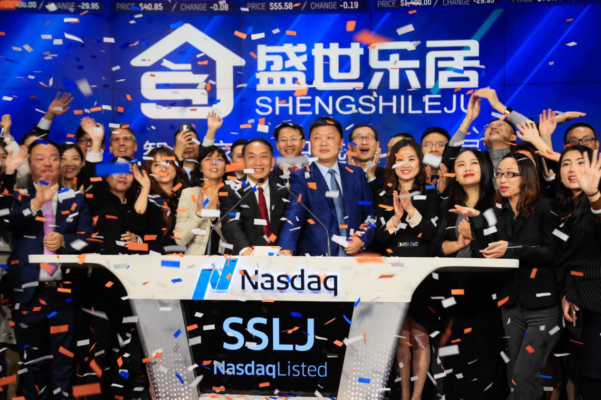
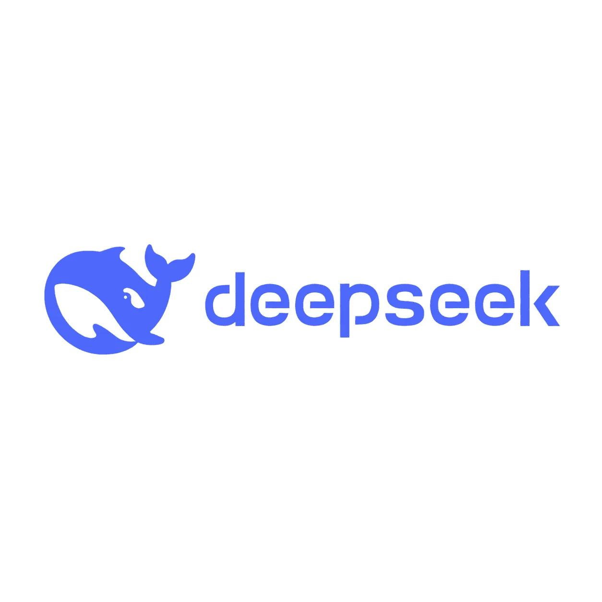
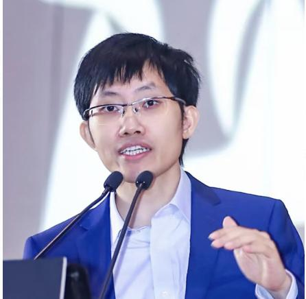
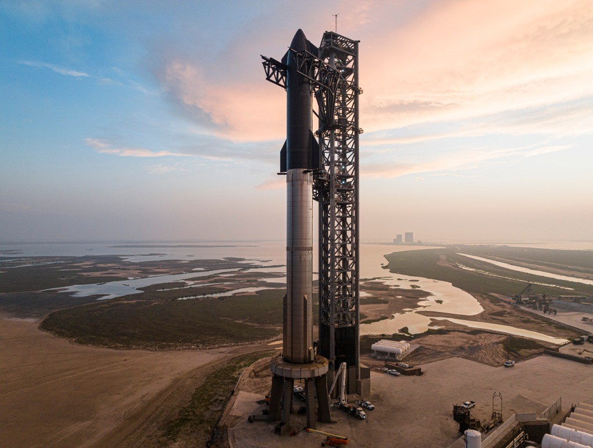
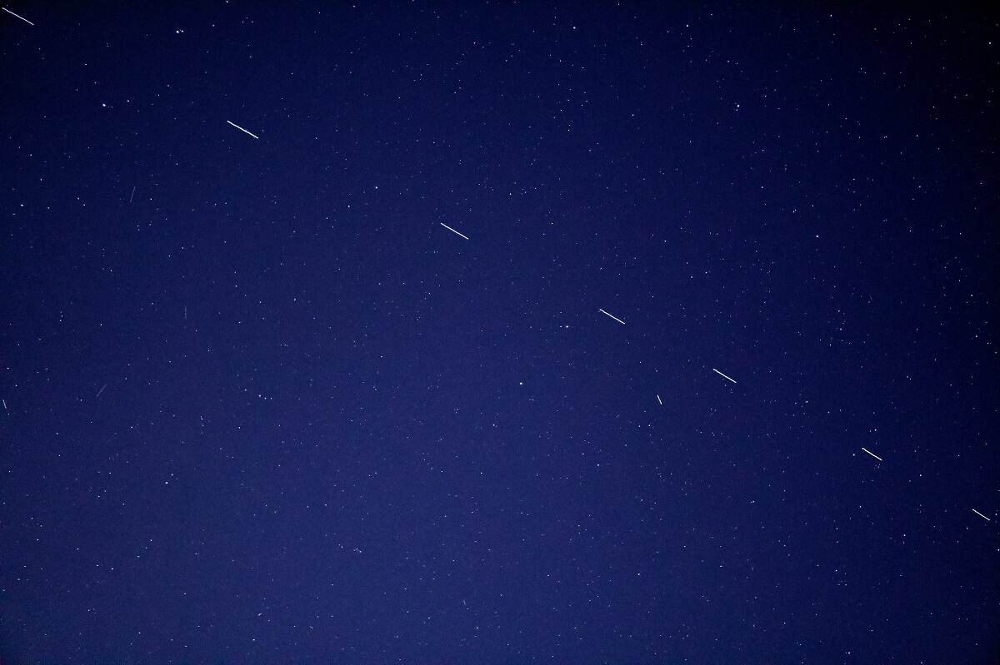
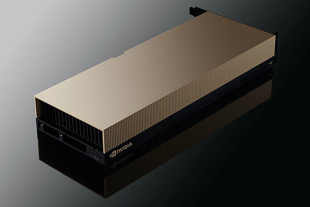

开场：核心结论先行
DeepSeek与SpaceX，两家看似毫无交集的公司，在2026年6月相继引爆全球资本市场：
DeepSeek（6月16日）：完成中国AI行业史上最大单轮融资，超500亿元人民币（约74亿美元），估值突破500亿美元。创始人梁文锋个人出资200亿元保控制权，国家AI基金破例直投。
SpaceX（6月12日）：完成全球史上最大IPO，融资750亿美元（超额配售达857亿美元），上市首日市值突破2万亿美元，跻身全球第六大上市公司。
这两起资本事件的背后，藏着一条清晰的叙事主线：前沿科技公司正在用"技术理想主义+精密资本设计"重塑全球科技格局。
今天这期视频，我们做三件事：
- DeepSeek首轮融资全景解析——控制权设计、估值逻辑、创始人背景
- SpaceX IPO深度拆解——财务数据、估值争议、马斯克控制术
- 给出三个可复用的分析框架——以后遇到任何前沿科技公司融资，自己能判断
建议先收藏，我们开始。

第一部分 · DeepSeek首轮融资全景解析
1.1 融资详情
| 维度 | 数据 |
|---|---|
| 融资时间 | 2026年6月16日正式披露 |
| 融资金额 | 超500亿元人民币（约74亿美元） |
| 投后估值 | 超500亿美元（约3380亿元人民币） |
| 融资轮次 | 成立近三年来的首次外部融资 |
| 融资规模 | 中国AI初创企业首轮融资史上最高 |
1.2 投资方阵容
本轮融资采用"特殊交易架构"，投资方阵容体现了"国家队+产业资本+顶级VC"的精准组合：
| 投资方 | 出资金额 | 类型 | 特殊条款 |
|---|---|---|---|
| 梁文锋（创始人） | 200亿元 | 个人出资，最大单一出资方 | — |
| 腾讯 | 100亿元 | 产业资本 | 无投票权 |
| 宁德时代 | 50亿元 | 产业资本 | 无投票权 |
| 京东 | 30亿元 | 产业资本 | 无投票权 |
| 网易 | 30亿元 | 产业资本 | 无投票权 |
| IDG资本 | 30亿元 | 财务投资 | 无投票权 |
| Monolith砺思资本 | 30亿元 | 财务投资 | 无投票权 |
| 正心谷投资 | 15亿元 | 财务投资 | 无投票权 |
| 拾象科技 | 15亿元 | 财务投资 | 无投票权 |
| 国家AI产业投资基金 | 10亿元 | 国家战略资本 | 直投主体，有投票权，无锁定期 |
数据来源：The Information、36氪、界面新闻综合报道
1.3 特殊交易架构：资本入场，控制权不失
这是本次融资最值得深入拆解的部分。梁文锋设计了一套堪称"教科书级别"的控制权防守术：
🎯 核心机制
- 资金路径隔离：除国家AI基金外，所有市场化资金均注入由梁文锋全权管理的有限合伙企业，而非直接注入DeepSeek主体。
- 投票权保留：外部投资者仅享有财务分红权利，不拥有任何公司投票权，无法干预技术路线、战略规划、人事决策。
- 五年强制锁定期：所有市场化资本设置五年强制锁定期，锁定期内不得转让、质押份额，从根源杜绝短期套利资本。
- 穿透式LP核查：梁文锋团队要求核查所有出资基金背后的有限合伙人真实身份，规避股权流入不明主体。
- 国家基金特殊安排：国家AI基金直投DeepSeek主体，保留完整投票权，但不受五年锁定期约束。
底层逻辑：梁文锋在2025年多次向投资人承诺"继续开源AGI路线"，他需要的是不追求短期套现的长期资本，而非传统的VC逻辑。
1.4 估值逻辑
DeepSeek 500亿美元估值，本质是市场对"中国自主大模型技术兑现价值"的一次集中定价。
估值支撑点：
- 月活用户1.27亿（2026年4月），国内第三，仅次于豆包、千问
- API调用量占比18.4%，国内第三
- 开源生态壁垒：V4系列模型全量开源，评测数据多项指标对标海外头部闭源模型
- 成本优势：推理成本为OpenAI同类产品的1/20
数据来源：雪球投研报告（2026年5月）
1.5 创始人梁文锋：从量化天才到AI旗手

| 维度 | 内容 |
|---|---|
| 出生年份 | 1985年 |
| 籍贯 | 广东湛江吴川 |
| 教育背景 | 浙江大学电子信息工程硕士（2002级） |
| 创立幻方量化 | 2015年 |
| 创立DeepSeek | 2023年7月 |
| 里程碑事件 | 2024年出席国务院总理座谈会 |
核心特质：
- 1985年出生于广东湛江吴川一个五线农村，父亲是小学老师
- 17岁以吴川一中高考状元考入浙大
- 2008年金融危机期间，带领7人团队开发基于机器学习的量化交易模型
- "不融资、不上市、不商业化"三不原则坚守多年，直到行业竞争逻辑发生根本性转变
📊 幻方量化背书
- 中国量化私募"四大天王"之一
- 2025年平均收益率56.55%，管理规模800-900亿元
- 为DeepSeek提供超10万张H100 GPU算力储备
- 累计向DeepSeek投入超200亿元研发资金
数据来源：量化金融民工报告、搜狐深度报道
1.6 商业模式与技术路线
商业模式：
DeepSeek收入结构
├── C端：免费AI助手（DeepSeek App）
├── B端：API调用服务（优惠后V4-Pro百万tokens仅0.25元）
│ └── 理论成本利润率545%（H800租赁成本测算）
├── 企业定制化解决方案：已签约客户超500家（金融、医疗、教育、工业）
└── 生态共建：与腾讯、阿里等合作
核心技术壁垒：
| 技术 | 描述 | 效果 |
|---|---|---|
| MoE（混合专家架构） | V4-Pro采用1.6万亿总参数，每次推理仅激活49B | 成本降低97% |
| MLA（多头潜在注意力） | KV缓存压缩至低维空间 | 显存降低60% |
| MTP（多词元预测） | 一次预测多个Token | 生成速度提升30% |
| FP8混合精度训练 | 保证精度同时降低内存占用 | 训练效率大幅提升 |
| 华为昇腾适配 | V4版本全面适配国产算力 | 独立可控的国产算力管线 |
技术路线独特性：
• 完全开源，MIT协议，允许企业免费商用
• 极低成本策略：API价格永久降至原定价四分之一
• 2026年4月完成V4-Pro 1.6万亿参数全参数后训练，国产AI芯片第一次完成万亿级大模型完整后训练流程
数据来源：CSDN技术分析、财经头条深度报告

第二部分 · SpaceX IPO深度解析
2.1 IPO详情
| 维度 | 数据 |
|---|---|
| IPO时间 | 2026年6月12日 |
| 上市地点 | 纳斯达克 |
| 股票代码 | SPCX |
| 发行价 | 135美元/股 |
| 融资规模 | 750亿美元（基础），857亿美元（行使超额配售后） |
| 首日开盘价 | 150美元/股 |
| 首日收盘价 | 160.95美元/股（涨19.22%） |
| 当前市值 | 约2.64万亿美元（6月16日收盘） |
| 全球排名 | 美国第六大上市公司，市值超越亚马逊 |
| 历史地位 | 全球史上最大IPO，超越沙特阿美2019年294亿美元纪录 |
数据来源：21世纪经济报道、东方财富网、钛媒体综合报道
2.2 估值争议：1.77万亿估值合理吗？
| 机构/观点 | 估值判断 | 核心逻辑 |
|---|---|---|
| SpaceX官方 | 1.77万亿美元 | 基于业务协同与TAM |
| 高盛/摩根士丹利 | 2-3万亿美元 | 承销商定价依据 |
| 晨星（Morningstar） | 7800亿美元 | 合理估值应为IPO目标的一半 |
| CFRA | 卖出评级，目标价115美元 | 激进增长战略与过高估值 |
| 丹麦养老金 | 不超过1万亿美元 | DCF现金流折现 |
| 富达 | — | 30%估值为"马斯克个人品牌溢价" |
| 迈克尔·伯里 | 无法支撑万亿估值 | 招股书内容不足以支撑 |
市销率对比：
| 公司 | 市销率（PS） |
|---|---|
| SpaceX | ~140倍 |
| 英伟达 | ~30倍 |
| Palantir | ~67倍 |
| 特斯拉 | ~15倍 |
| 苹果 | ~8倍 |
数据来源：中国经济周刊、钛媒体、网易财经综合报道
2.3 财务数据：亏损中的巨无霸
三年财务表现：
| 年度 | 营收 | 净利润 | 备注 |
|---|---|---|---|
| 2023年 | — | -46.3亿美元 | — |
| 2024年 | — | +7.9亿美元 | 唯一年份盈利 |
| 2025年 | 186.7亿美元 | -49.4亿美元 | 营收同比增长33% |
| 2026年Q1 | 46.9亿美元 | -42.8亿美元 | 同比增长15%，但亏损扩大 |
2025年业务板块拆分：
| 业务板块 | 营收 | 运营利润/亏损 | EBITDA | 占比 |
|---|---|---|---|---|
| Starlink（连接业务） | 113.87亿美元 | +44.23亿美元 | +71.68亿美元 | 61% |
| 火箭发射 | 40.86亿美元 | -6.57亿美元 | +6.53亿美元 | 22% |
| AI/xAI | — | -63.55亿美元 | — | — |
关键数据点：
• Starlink是唯一盈利板块，2025年运营利润率38.8%
• 截至2026年Q1，Starlink全球订阅用户1030万，覆盖164个国家和地区
• 累计部署卫星超9600颗，占全球在轨活跃卫星约65%
• SpaceX自2002年成立以来累计亏损约413亿美元
数据来源：新浪财经、SpaceX招股书（SEC S-1文件）
2.4 融资用途：一场"烧钱换未来"的豪赌
根据招股书披露，857亿美元募资将用于：
| 用途 | 金额 | 占比 |
|---|---|---|
| 轨道AI算力基础设施建设 | 300亿美元 | 35% |
| 星舰量产与发射设施扩建 | 200亿美元 | 23% |
| 星链V3卫星扩容及手机直连 | 150亿美元 | 18% |
| 偿还高息负债及补充流动资金 | 100亿美元 | 12% |
| 其他 | 107亿美元 | 12% |
📊 上市后的资本支出激增
- 2023年资本支出占营收比重：42%
- 2026年Q1资本支出占营收比重：215%
- 2026年Q1单季度资本开支达101亿美元，其中77.2亿美元投向AI
2.5 马斯克控制权：绝对控制与超级投票权

| 股东 | 持股类型 | 经济权益 | 投票权 |
|---|---|---|---|
| 马斯克 | A类股12.3% + B类股93.6% | ~42% | 85.1% |
| Antonio Gracias | A类股7.3% | — | — |
| 其他投资者 | — | — | — |
关键机制：
- B类股每股拥有10票投票权，A类股每股1票
- 马斯克虽持股仅42%，但牢牢掌控绝对投票控制权
- SpaceX上市后维持"受控公司"地位，无需多数独立董事
马斯克个人财富：
• 上市后突破1万亿美元，成为人类历史上首位"万亿美元富翁"
• 按IMF数据，其身家超过全球140多个国家的GDP
数据来源：星岛记事、新浪财经
2.6 最新动态：600亿美元收购Cursor
2026年6月16日（上市第四天），SpaceX宣布以600亿美元收购AI编程工具Cursor开发商Anysphere。
📋 交易要点
- 采用换股合并方式
- 预计2026年Q3完成
- 600亿美元相当于SpaceX年收入的3.2倍
- Cursor是硅谷最炙手可热的AI编程代理之一，与GitHub Copilot直接竞争
战略意图：
• SpaceX正在将AI变成与航天平行的核心业务
• 用星链现金流养火箭和AI两条烧钱线
• "太空+AI"故事持续加码

第三部分 · 深度对比分析
3.1 共同点：从"技术理想主义"到"资本博弈高手"
| 共同维度 | DeepSeek | SpaceX |
|---|---|---|
| 创始人定位 | 技术天才+连续创业者 | 技术天才+连续创业者 |
| 控制权设计 | 五年锁定期+无投票权架构 | 双重股权+B类股10倍投票权 |
| 资本策略 | "不融资"到精准引入战略资本 | 长期私有化到史上最大IPO |
| 核心壁垒 | 技术原创性+开源生态 | 发射垄断+Starlink规模壁垒 |
| 使命驱动 | AGI普惠人类 | 人类成为多行星物种 |
| 行业地位 | 中国AI开源第一 | 全球商业航天第一 |
| 最新动作 | 500亿融资备战 | 600亿收购AI公司 |
3.2 核心差异矩阵
| 维度 | DeepSeek | SpaceX |
|---|---|---|
| 融资结构 | 首轮外部融资（74亿美元） | 终极IPO（857亿美元） |
| 资本来源 | 产业资本+国家队 | 全球机构+散户 |
| 盈利状态 | 接近盈亏平衡（API理论利润率545%） | 持续亏损（2025年亏49亿美元） |
| 收入模式 | B端API+企业定制 | Starlink订阅+政府合同 |
| 政策环境 | 中国AI政策支持 | 美国国防与航天战略绑定 |
| 行业周期 | AI高速增长期 | 商业航天起步期 |
| 技术验证 | 已验证（1.27亿月活） | 部分验证（Starlink盈利） |
| 估值基础 | 用户价值+收入倍数 | TAM叙事+平台溢价 |
| 时间维度 | 短期可验证 | 长期"梦想"兑现 |
3.3 估值逻辑的本质差异
DeepSeek的估值逻辑：
500亿美元 = 已有收入 × 高增长预期 × 生态卡位价值
= 18.4% API市场份额 + 1.27亿月活 + 开源生态
+ 华为昇腾自主可控 + AGI长期期权
SpaceX的估值逻辑：
1.77万亿美元 = 现有业务（已验证）+ 未来业务（想象空间）
= Starlink 114亿（已盈利）+ 火箭发射41亿 + AI（画饼）
+ "太空基础设施平台"叙事
+ 马斯克个人品牌溢价
核心差异：
- DeepSeek估值有短期数据支撑（用户量、API调用量、成本优势）
- SpaceX估值更多依赖长期TAM叙事（28.5万亿美元理论市场）
3.4 投资价值的信号与风险
✅ 从投资人视角看DeepSeek：值得关注的信号
- 开源生态的网络效应：一旦开发者深度绑定，换模型成本极高
- 成本优势的结构性：MoE+MLA+华为昇腾适配=持续成本领先
- 国家队背书：国家AI基金直投具有战略信号意义
- 创始人"all in"：梁文锋个人出资200亿元，是最大的风险共担
- 健康的商业模式：API定价已验证，理论利润率545%
⚠️ 从投资人视角看DeepSeek：需要警惕的风险
- 人才流失风险：罗福莉等核心研发人员已被大厂挖角
- 商业化压力：开源路线与变现能力的平衡
- 幻方量化关联风险：老鼠仓案等合规问题可能传导
- AI泡沫风险：500亿美元估值是否透支未来3-5年？
✅ 从投资人视角看SpaceX：值得关注的信号
- Starlink已验证：全球164国、1030万用户、38.8%运营利润率
- 政府合同护城河：NASA、国防部等长期合作，现金流稳定
- 发射垄断地位：全球商业发射87%-91%市场份额
- 平台型公司潜力：太空基础设施+AI的协同想象
⚠️ 从投资人视角看SpaceX：需要警惕的风险
- 持续亏损：2025年亏49亿美元，2026年Q1亏43亿美元
- 估值泡沫：PS 140倍，远超英伟达30倍
- 创始人依赖：马斯克精力分散（特斯拉、X/xAI、政治角色）
- 流通股压力：目前仅4%，年底升至50%可能引发抛售
- 技术不确定性：星舰仍在测试，太空数据中心尚未落地
第四部分 · 可复用分析框架
4.1 前沿科技公司估值四维框架
🎯 公式：前沿科技公司估值 = f(技术壁垒, 商业验证, 生态卡位, 创始人溢价)
| 维度 | DeepSeek | SpaceX |
|---|---|---|
| 技术壁垒 | ⭐⭐⭐⭐⭐ MoE+开源+昇腾适配 | ⭐⭐⭐⭐⭐ 发射+卫星星座 |
| 商业验证 | ⭐⭐⭐ 已验证API收入 | ⭐⭐⭐ Starlink验证，AI未验证 |
| 生态卡位 | ⭐⭐⭐⭐ 开发者生态 | ⭐⭐⭐⭐⭐ 太空基础设施 |
| 创始人溢价 | ⭐⭐⭐ 低调技术派 | ⭐⭐⭐⭐⭐ 全球偶像级 |
4.2 "理想主义公司"资本化路径模型
Phase 1：技术理想主义阶段
特征：不融资、不商业化、追求技术突破
代表：早期DeepSeek（2023-2025）
Phase 2：战略资本介入
特征：引入产业资本+国家队，保留控制权
代表：DeepSeek 2026年6月首轮融资
Phase 3：商业化验证
特征：B端收入规模化、C端用户爆发
代表：Starlink（2023-2026）
Phase 4：公开市场定价
特征：IPO/二级市场，让公众投资者参与
代表：SpaceX 2026年6月IPO
关键决策点：
- 何时从Phase 1进入Phase 2？
- 如何在Phase 2设计中保留创始人控制？
- Phase 3到Phase 4的节奏把控？
4.3 风险收益不对称分析
DeepSeek的风险收益：
- 潜在上行：AGI突破+开源生态主导权+国产替代
- 潜在下行：AI赛道降温+人才流失+商业化不及预期
- 不对称性：下行有底（技术实力支撑），上行空间大
SpaceX的风险收益：
- 潜在上行：太空数据中心落地+火星任务成功+AI算力闭环
- 潜在下行：估值回归基本面（跌50%）+持续亏损+马斯克退出
- 不对称性：上行靠"梦想"，下行靠"现实"修正
第五部分 · 行业启示与投资建议
5.1 对中国AI行业的启示
- DeepSeek模式的可复制性：
- 幻方量化→DeepSeek的路径不可复制，但"用盈利业务养技术研发"的逻辑可以借鉴
- 开源路线在资源受限情况下是差异化竞争的有效策略
- 国家队+产业资本的新范式：
- DeepSeek融资标志着中国AI进入"国家队引领+产业资本主导"时代
- 纯财务VC难以支撑大模型竞争
- 估值的艺术：
- 500亿美元估值是市场对"中国AI技术原创能力"的重估
- 但也要警惕估值透支未来
5.2 对全球科技格局的启示
- SpaceX改写了IPO规则：
- 不接受议价+高散户配比+创始人绝对控制
- "梦想"第一次在资本市场达到应有量级
- 科技公司资本化的新趋势：
- 高估值、高投入、高亏损、高预期的"四高"特征
- VC风险正在向公开市场转移
- "太空+AI"的新叙事：
- SpaceX上市可能开启新一轮科技巨头IPO周期
- OpenAI、Anthropic、Databricks等估值已超3万亿美元
5.3 投资建议摘要
| 公司 | 评级 | 核心逻辑 | 风险提示 |
|---|---|---|---|
| DeepSeek生态 | 增持 | 技术领先+开源壁垒+国家队背书 | 商业化节奏、人才流失 |
| SpaceX（SPCX） | 中性偏谨慎 | Starlink验证但估值过高 | 持续亏损、估值回归 |
结语
DeepSeek与SpaceX，两个看似毫无交集的故事，背后却藏着同一条主线：
前沿科技公司正在用"技术理想主义+精密资本设计"重塑全球科技格局。
DeepSeek用500亿首融告诉世界：中国AI不只会追赶，更能定义标准。
SpaceX用750亿史上最大IPO告诉世界："梦想"第一次在资本市场有了应有的量级。
两个故事，两种路径，但都在证明同一件事：
在这个时代，技术理想主义和精密资本设计，从来不是一道二选一的选择题。
如果这期视频对你有帮助，欢迎一键三连。我们下期见。